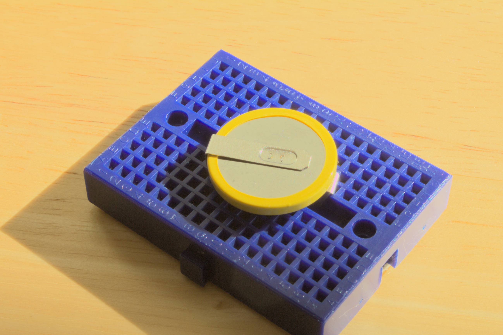

LED Valentines: Build a light-up circuit
Components
- Tiny breadboard
- Battery (pre-mounted on the breadboard in pins E-6 & F-13)
- 2 LEDs (1 steady red light, marked with red paint on the wire; 1 rainbow flashing light)
- 2 resistors (10 ohms - brown/black/black - gold; 47 ohms - green/purple/black - gold)
Assembly Instructions
Lay out your pieces and make sure the battery is still attached to the board. Make sure you have two resistors, two LED bulbs, and a switch.

The location on the breadboard will be written as Column-Row. For example, Column D, Row 10 would be D-10
Step 1: First, add the LED lights. The LEDs have a short wire and a long wire:
- Put the long wire of the red LED into C-6 and the short wire into C-5
- Put the long wire of the rainbow LED in B-6 and the short wire into B-7
Step 2: Next, add the resistors. The 10 ohm resistor has a brown band. The 47 ohm resistor has a green band.
- One wire of the 47-ohm resistor goes in column G-14
- One wire of the 10-ohm resistor goes into column F-14
- Now the two free wires of the resistors should be pointing up out of the board into the air
- Bend the wires of the 47-ohm resistor over the battery so that the free end can fit into D-5.
- Bend the wires of the 10-ohm resistor over until the free end can be inserted into A-7.
Be careful that the resistor wire is NOT resting against any other metal on the battery or LEDs.
The resistors with one side attached is shown here.
The breadboard with the LEDs and both resistors completely attached should look like the following image:
Step 3: Finally, add the switch.
- The three wires of the switch go into Column J, Rows 12, 13, and 14.
- The orientation of the switch doesn’t matter.
The following circuit illustration can be used to identify if all of the components have been placed in the correct places.